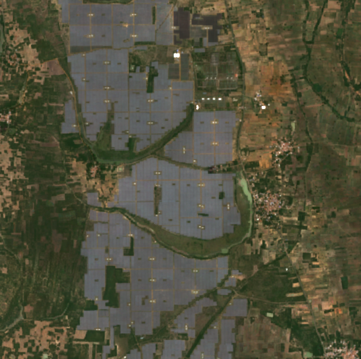

Solar asset assessment
Kamuthi Solar Power Plant
648 MW · 9.3381, 78.3917 · Adani Power Limited
resolved
The site

True-colour Sentinel-2 composite over the footprint.
Share of the footprint reading as built or bare ground
How green the ground is inside the footprint
Built-ground share moves with the seasons as well as with construction, which is why a construction date is only reported when a clear rise is visible.
The five checks
- clearWas it built when the record says?30 ptsRaised when construction appears more than 12 months after the reported commissioning year ends.
- clearIs there as much sun as expected?20 ptsRaised when average yearly sunlight runs more than 3% below the 1991–2020 norm for that spot.
- clearDoes it run too hot to perform?15 ptsRaised above 60 days a year over 40°C. Panels lose roughly 0.35% of output per °C above 25°C.
- FLAGIs vegetation taking the site back?15 ptsRaised when greenness inside the footprint climbs by more than +0.010 a year.
- FLAGCould water reach it?20 ptsRaised when standing water has covered part of the site more than 10% of the time since 1984, or the ground sits under 5 m above the nearest drainage line.
Filled bars are the checks that flagged. The risk score is their combined weight. It ranks what to examine — it is not a valuation, a yield estimate, or a statement about the operator.
1 of six checks could not be resolved. They are shown as not resolved and counted as clear, so this risk score is a lower bound — the evidence that is missing could only push it up.
Every measurement behind it
| What was measured | Value | Where it comes from |
|---|---|---|
| Build year on record | not resolved | WRI Global Power Plant Database |
| What the imagery shows | Already built before the satellite record opens | Dynamic World, built or bare share of the footprint |
| Difference | not resolved | positive means built after the reported year |
| Sunlight vs. the local norm | -2.76% | ERA5-Land against its own 1991–2020 average (GHI) |
| Typical yearly sunlight | 2,003 kWh/m² | ERA5-Land 1991–2020 average |
| Days a year above 40°C | 6 days | ERA5-Land daily maximum air temperature |
| Output lost to heat | 14.0% | standard cell-temperature model at -0.35%/°C |
| Greenness trend on site | 0.0233 a year | Sentinel-2 yearly median, straight-line trend (NDVI) |
| Time this ground has been under water | 14% | JRC Global Surface Water, 1984–2021 |
| Height above nearest drainage | 7.7 m | Copernicus DEM, 2000 m around the site (HAND) |